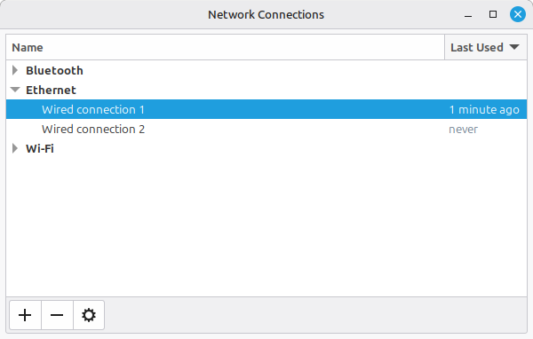
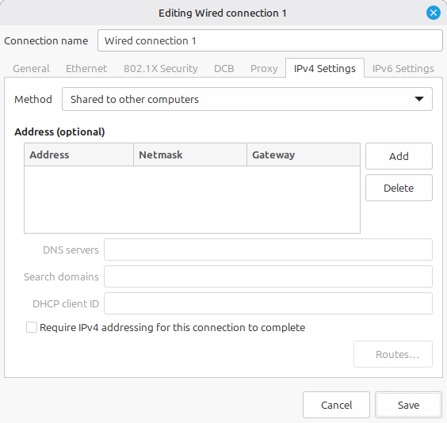

How to ssh into your home server without it being connected to the router?
Have you ever been in a situation that you have a home server that has Ubuntu Server 24 and ssh running but is not connected to your router and you don’t have a keyboard and screen at hand to interact with it?
Well it is not a very common scenario but it is what I encountered recently. I have a mini PC home server that was not connected to the home wifi yet and I didn’t have an ethernet cable coming from the router to connect it to the network. Neither did I have a USB keyboard and screen to interact with it. All I had at had was my laptop and an ethernet cable. I assumed that should be enough to connect the two computers and be able to use ssh.
The solution actually made it possible to even share internet from my laptop to the mini PC through the ethernet cable.
I am not an expert at networking but I have some knowledge on the topic. I am going to focus on the local area (in the house) network. There devices have their own local IP addresses usually looking like this: 192.168.0.1, i.e. four numbers between 0 and 255. I remember from long ago that I managed to connect two PCs with an ethernet cable and made them able to “communicate”. For that I had to set their IP addresses manually let’s say to 192.168.0.1 and 192.168.0.2. Then running ping 192.168.0.2 from PC 1 confirmed the connection.
The problem is that I couldn’t manually set the IP address of my mini PC because of the lack of keyboard. So let’s go further in the understanding of networks.
Today when we connect to networks, either through ethernet cable or through wifi, usually we connect to a router and we don’t need to set any IP address manually. That is because a DHCP server is integrated in the router, which automatically assigns IP addresses to the connected devices.
So first I thought I might need to set up a DHCP server and then just connect the two computers and I would be able to ping and ssh to my mini PC. However, in the end I found an easier method in the GUI of network configuration of my laptop (Linux Mint 22), that can even share the internet from my laptop to the mini PC.
How to set up the network through a direct ethernet cable
- Connect your PC/laptop to the other PC/server with an ethernet cable.
- Set your computer IPv4 Settings to “Shared to other computers”. This is not a commonly known feature that is key to reaching our goal.
- Where to find this option? On Linux Mint 22, either click on the network icon on the tray in the lower right corner of the screen. Then click Network Connections. Or simply just type in Advanced Network Configuration into the search bar. You will see the following:

- Double click on the correct wired connection under the Ethernet category.
- Then choose the IPv4 Settings tab in the new window and at the Method selection choose the Shared to other computers option.

- Where to find this option? On Linux Mint 22, either click on the network icon on the tray in the lower right corner of the screen. Then click Network Connections. Or simply just type in Advanced Network Configuration into the search bar. You will see the following:
- Now that the two computers are connected and the network is configured, you need to find out the IP address of your server. You can do that by running either the
ip neighboror thearpcommand in the terminal (https://www.cyberciti.biz/faq/linux-list-network-interfaces-names-command/). The IP address of the other machine is in the row with the corresponding network device. For me that was like the line below, whereenp0s31f6is my ethernet network card. You can list your network devices withip link.user@machine:~$ ip neighbor 10.42.0.33 dev enp0s31f6 lladdr MA:C_:AD:DR:ES:S_ REACHABLE - Use ssh to log in to the server:
ssh user@10.42.0.33.
This is basically what I wanted to achieve but actually now the mini PC also had internet through my laptop which came in handy for installing packages on it.
The next step that I wanted to still do is to…
Connect to wifi on Ubuntu Server 24 through the command line
Finding the solution to this seemingly simple problem was not easy because most tutorials assume you use some linux distribution with some network manager but it was not always clear for me that they made the assumption in the first place.
So the first thing that you need to do is to find out what software your distribution uses for network configuration. Common ones are NetworkManager, netplan, ifupdown (older) or a combination of these. In my case it was just netplan, so that’s what I will briefly describe.
Create a network config file at /etc/netplan/01-wifi.yaml or a similarly named YAML file in that directory based on this tutorial then run sudo netplan apply and it’s done.
My config file looks like this:
network:
wifis:
wlp2s0:
optional: true
access-points:
"SSID_of_my_home_wifi":
password: "WiFi_password"
dhcp4: true